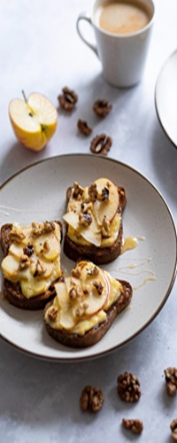
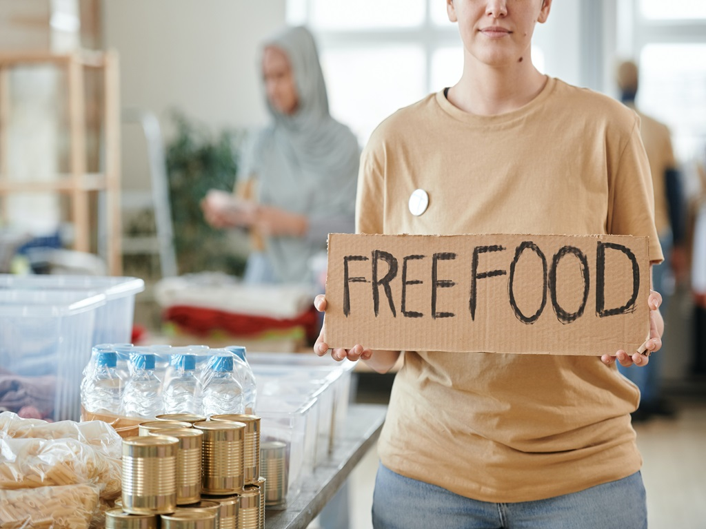

I chose to optimise this image because it is a large image and it is important to ensure that the image is not too large for the web page. This image is 7.90MB and I have reduced it to 252KB. This will help the page load faster and will also help with SEO. I have also reduced the image dimensions to 700x700 pixels. This will help the image to load faster and will also help with SEO.
I chose to optimise this image because it is a large image and it is important to ensure that the image is not too large for the web page. This image is 3.14MB and I have reduced it to 34.4KB. This will help the page load faster and will also help with SEO. I have also reduced the image dimensions to 200x500 pixels. This will help the image to load faster and will also help with SEO. I chose this image because according to my criteria it is the one that best fits the required dimensions. That's why I only had to make a brief width reduction so that it didn't seem distorted.
I chose to optimise this image because it is a large image and it is important to ensure that the image is not too large for the web page. This image is 2MB and I have reduced it to 180KB. This will help the page load faster and will also help with SEO. I have also reduced the image dimensions to 1080x768 pixels. This will help the image to load faster and will also help with SEO. I chose this image because, being a person holding a letter, it can be interesting for users and I chose the dimensions so that it quickly adapts to the full width of the screen.
To optimize the images, I used the Paint tool where I reduced the size of the images and the dimensions. For the first image, I reduced the size from 7.90MB to 252KB and the dimensions from 2456x2832 to 700x700, which I chose for having the dimensions closest to a square. For the second image, I reduced the size from 3.14MB to 34.4KB, the dimensions from 3363x4708 to 200x500, and cropped the width to prevent the image from being distorted. For the third image, I reduced the size from 2MB to 180KB and the dimensions from 6000x4000 to 1080x768. These optimizations will help the page load faster and will also help with SEO. I chose this image to make a greater first impact.